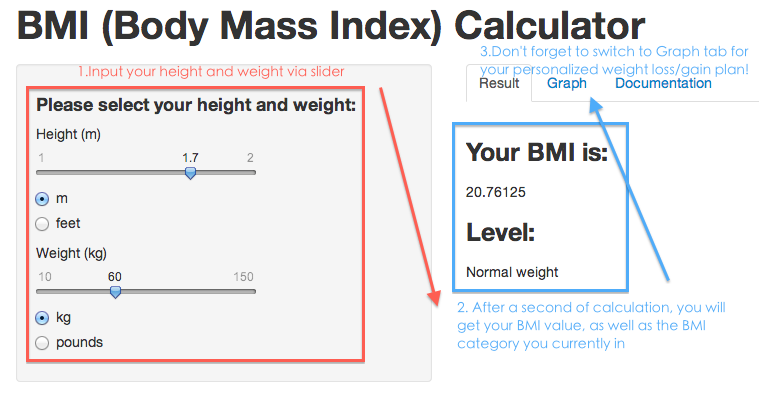

It helps you:
- Find out your current BMI status (in 'Result' tab)
- Make weight loss/gain plan to achieve expected BMI category (in 'Graph' tab)
Paul Lo (paullo0106@gmail.com)
Software Engineer
It helps you:
w <- 60 # when user enter 60 kg as weight
h <- 1.7 # when user enter 1.7 m as height
w/h^2 # calculate BMI
## [1] 20.76
\[BMI=\frac{Weight (kg)}{Height^2 (m)}\] UI sample code: apply conditionPanel to allow user switch weight/height unit system
conditionalPanel(condition="input.weight_unit=='kg'",
sliderInput('weight', 'Weight (kg)',value=60,min=10,max=150,step=1)),
conditionalPanel(condition="input.weight_unit=='pounds'",
sliderInput('weight2','Weight (pounds)',value=130,min=22,max=330,step=2)),
radioButtons("weight_unit","",c("kg"="kg","pounds"="pounds"))

Partial Sample Code to draw the graph (please refer to my github for complete code)
# BMI calculation fomula
calculator <- function(w) w/h^2
# draw the graph showing corresponding changes on BMI when weight increase/decrease
plot (calculator, 0, 100, n=10, xlab="Weight (kg)", ylab="BMI")
# user's current position
points(w,calculator(w), bg='blue', pch=21, cex=3, lwd=3)
# use rect() to draw four area indicating different categories
rect(left_bound, lower_bound, normal_weight, upper_bound, col= 'yellow')
rect(normal_weight, lower_bound, overweight, upper_bound, col= 'blue')
rect(overweight, lower_bound, obesity, upper_bound, col= 'orange')
rect(obesity, lower_bound, right_bound, upper_bound, col= 'red')